Many objects in the Inkscape program can be created by
starting with basic shapes and then editing them to create new shapes.
In this tutorial, you will use some basic shapes to create a logo.
In this tutorial on the work area, you will learn how to:
If you like, choose View > Zoom > Zoom Out
(-) to make the finished artwork smaller, adjust the window size,
and leave it on your screen as you work. Move the artwork where you want it
in the window using the <Shift>+arrow keys. If you don't want to leave
the image open, choose File > Close.
Now create the start file to begin the lesson.
Choose File > New to open a new, untitled
document.
Choose File > Save As…, name the file
Logo, and navigate to the folder where you want to store the file
using the Save In menu. Leave the default file format as Inkscape SVG
(*.svg). Inkscape will automatically append the filename with .svg
as it saves.
Setting up the Document
You’ll begin this tutorial by
displaying a grid to use as a guideline for drawing,
setting the ruler units to inches,
closing the color palette and Command toolbar that you won’t
use,
opening the Snap Controls bar to adjust the positioning of
objects.
Close the color palette by pressing <Shift>+<Alt>+p or
choosing View > Show/Hide > Palette. To close the Commands toolbar,
choose View > Show/Hide < Commands Bar. For now, you won’t need
to use it.
Choose View > Page Grid to display a grid that’s useful for
measuring, drawing, and aligning shapes. The grid won’t print with the
artwork.
If the rulers are not visible along the top and left side of the
window, choose View > Show/Hide > Rulers to display them. The ruler
units are set by default to pixels.
You can change ruler units for the current document. The ruler unit of
measure applies to measuring objects, moving and transforming objects, setting
grid and guide spacing, and creating ellipses and rectangles. (It does not
affect the units in the Character, Paragraph, and Stroke palettes.)
Choose File > Document Properties.
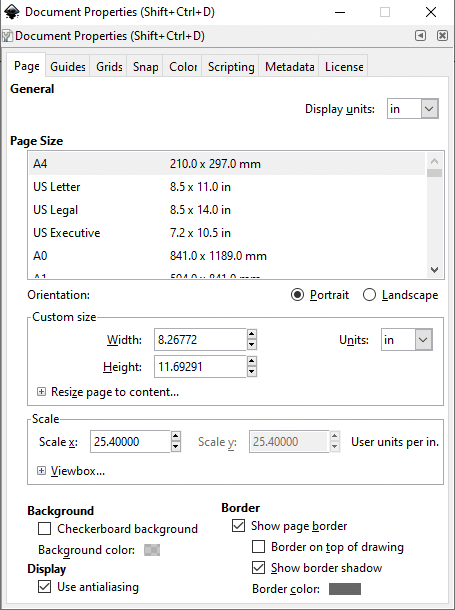
Document Properties dialog box.
Click on the Grids tab.
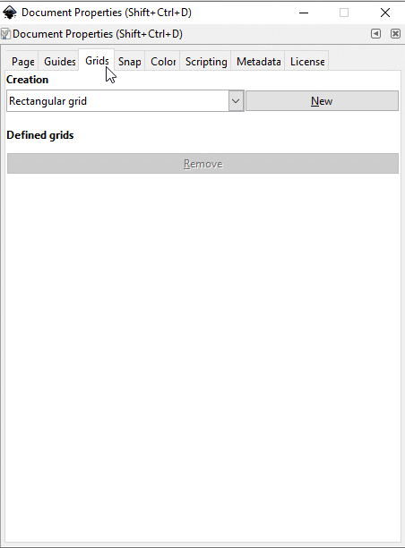
Grids dialog box.
Click on the New button in the Creation section.
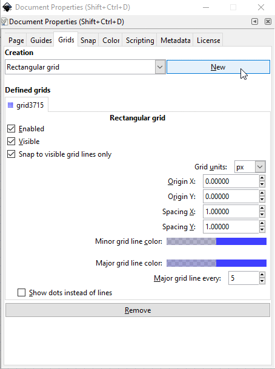
New Grid dialog box.
Click on in in the Grid units dropdown menu.
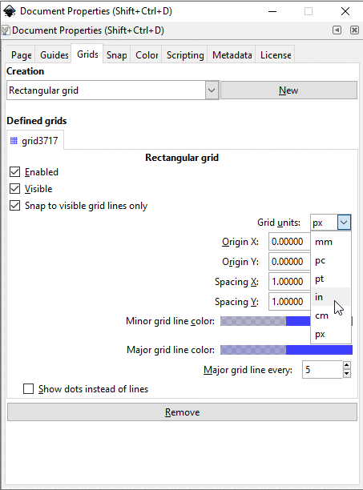
Grid Spacing inches dialog box.
We will now change the grid spacing so that squares measure 1/8 inch
on each side. With the Grids dialog box still active, change the Spacing
X and Spacing Y measurements to 0.125 (Press
<Enter> after each entry). The grid spacing now shows squares that
measure 1/8 inch on each side.
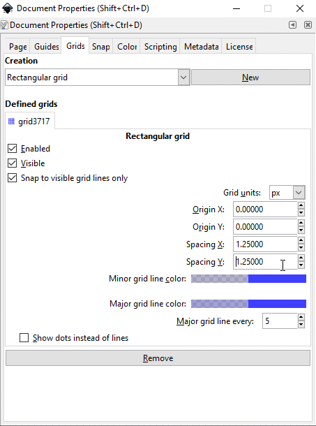
Changing the grid spacing to 1/8 inch.
We will make the major grid lines a darker blue than they are
currently. Click on the Major grid line color bar. The Major grid
line color dialog box appears. Enter the numbers from the figure below to
create major grid lines that are colored navy blue:
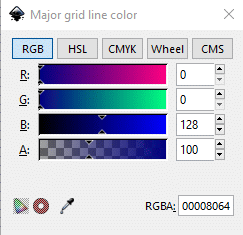
Major Grid Line Color dialog box. The numbers produce a navy
blue color.
Close the Major Grid Line Color and Grids dialog boxes when
done.
Close the Color palette by choosing View > Show/Hide
> Palette.
If the Snap Controls Bar isn’t visible, choose
View > Show/Hide > Snap Controls Bar to display
it.
Snap Controls bar.
Using Basic Shape Tools
In this tutorial, you’ll create a simple logo using the basic shape
tools in the toolbox. The shape tools include the:
Create rectangles and squares tool (),
Create circles, ellipses, and arcs tool (), and
Create stars and polygons tool ().
Drawing the Pencil Shape
In Inkscape, you control the thickness and color of lines that you draw by
setting stroke attributes. A stroke is the paint characteristics of a line or
the outline of an object. A fill is the paint characteristics of the inside of
an object. The default settings will let you see the objects you draw with a
white fill and a black outline.
Select the Zoom tool ()
in the toolbox, and click in the middle of the window once or twice until you
are zoomed in to about 150%. (Notice that 150%, more or less, is displayed
in the bottom left corner of the window.)
Choose View > Guides to turn them on. Guides
automatically snap the edges of objects to nearby objects or their intersect
points as you move them.
Select the Rectangle tool (), and drag it to draw a rectangle
that's 0.75 inches wide and 1 inch tall. (Use the rulers and the grid as
guides.) This will be the body of the pencil.
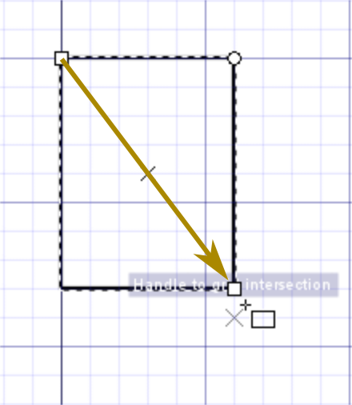
Drag to draw first rectangle
Note the rectangle’s width (W) and height (H) in
the Tool Controls bar: 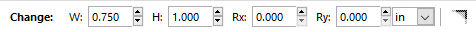
If the rectangle’s dimensions are not correct, it’s easy
to change them. Click on the rectangle’s border if it isn't still
selected. Then, click in the W (width) box and change the measurement
to .75. Do the same with the H (height) box, changing the
measurement to 1. The rectangle’s dimensions will update
accordingly.
You’ll draw another rectangle centered inside the first one to
represent the two vertical lines on the pencil.
With the Rectangle tool still selected, position the pointer over the
center point of the rectangle, hold down the <Shift> key, and drag out
from the center point to draw a rectangle that's centered inside it. Release
the mouse button when the rectangle is the same height as the first rectangle
(1 inch). If the unit of measurement is not in inches (in), click in
that box and choose in from the drop-down menu. In the width
(W) box, change the measurement to 0.42 so the inner rectangle
won’t appear unnecessarily broad.
Holding down <Shift> as you drag the Rectangle tool draws the
rectangle from its center point rather than from its top left corner.
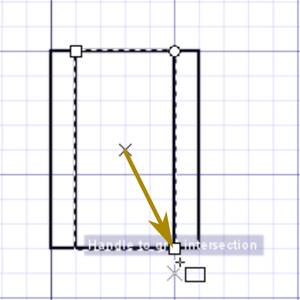
<Shift>-drag to draw second rectangle
The inner rectangle is ½ an inch in width. It makes the pencil
look overly broad. Click in the width (W) box and change the
width to 0.42 (make sure the unit of measurement is in).
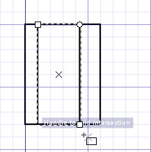
Inner rectangle width changed to 0.42 in.
The inner rectangle needs to be centered inside the outer rectangle.
The Snap centers of objects tool () will allow us to do centering easily.
Click on the Snap to object center tool to activate it ()
Click on the border of the inner rectangle with the Select tool
()
to select it. Drag the inner rectangle until you see the tool tip indicating
that the rectangle will now snap into place.
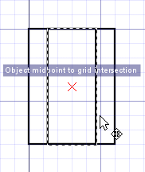
Inner rectangle snapping into place.
Release the mouse and click off the rectangle to deselect it.
Now you'll create a rounded rectangle for the eraser using the Node
tool ().
Choose the Rectangle tool and create a 0.75 in × 0.75 in square
using the grid lines to snap the figure into a good position. Leave the
square selected.
Choose the Node tool ().
Left click on the circular handle on the upper right corner of the
square and drag it down by one grid square. Release the mouse button. Left
click on the second circular handle that is still on the upper right corner
of the square and drag it over to the left by one grid square. All four
corners of the square are now rounded.
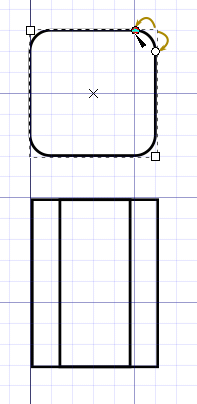
Drag one circular handle down one grid square length and then the
second to the left to round all four square corners.
You will now snap the eraser shape to the top of the pencil body.
If the Snap Controls Bar is not displayed, choose View >
Show/Hide > Snap Controls Bar to display it.
Click the Select tool () if it is not already selected.
Click on the edge of the rounded square to select it.
Click on the Enable snapping button at the far left of the Snap
Controls bar (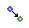) to activate the snapping
function.
Click on the Snap bounding boxes button which is the next button to
the right of the Enable snapping button. It looks identical to the Enable
snapping button but has a different tool tip description.
Click on the Snap midpoints of bounding box edges button ().
Drag the rounded square shape until it is close to the top of the
pencil body and release the left mouse button. The eraser shape immediately
shifts into place squarely on the top of the pencil body. If you under- or
overshoot, just drag the eraser into place and see the pulling action of the
snapping function.
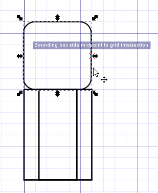
Result
Next you’ll create two shapes to represent the metal bands connecting
the eraser to the pencil.
To prevent automatic snapping to a grid line that will misalign your
objects, click on the Snap to grids button () to turn
the feature off. Keep the other snapping features on because they will help
in aligning objects properly.
To make the first band, create a rounded box 1 square high and 8
squares long. Note that the corners are already rounded because the
rounding function carries over into your next created rectangle or square.
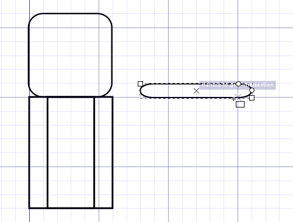
Create the first band.
Now move the band to the top of the pencil body using the Select tool
(). Because the snapping function is still active, the band will snap
into position.
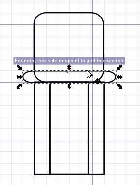
Reposition the first band.
Resize the length of the band to 0.85 inches by clicking in the width
(W) bar and typing in .85 <Enter>. The band automatically
resizes.
Resizing the band.
Now move the band with the Select tool ()so that it
snaps into its properly centered position on top of the pencil body.
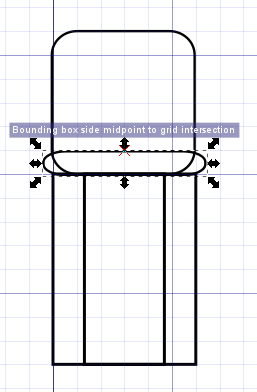
Moving the resized band.
Copy the band by selecting it (if it’s been deselected) and then
pressing <Ctrl>-D (D or d for duplicate). A copy of
the band now sits directly on top of the original. Drag the copy of the band
up until it snaps into place above the first band.
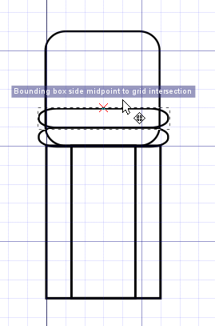
Copying the band.
Now you’ll draw two triangles to represent the pencil tip and its
lead using Outline view.
Choose View > Display mode > Outline to
switch from Normal view to Outline view.
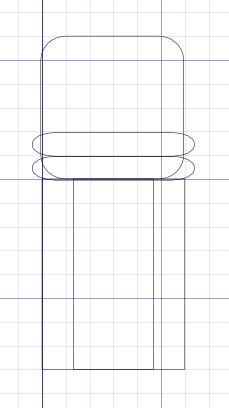
Pencil body in Outline view.
Select the Polygon tool ().
In the Corners box, change the number of corners to 3: 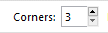
Position the pointer over the center point of the two rectangles.
<Shift>-drag to begin drawing a triangle, but don’t
release the mouse button. Move the mouse in an arc to rotate one side of the
triangle to the top.
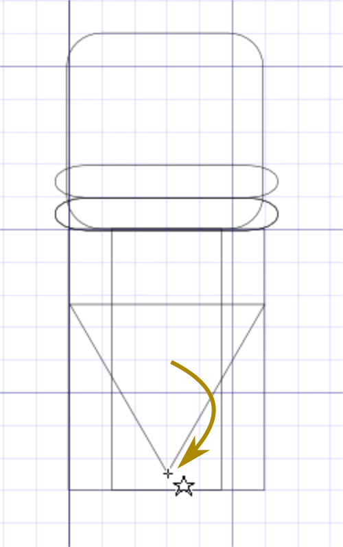
Drawing a triangle.
While still pressing the left mouse button, drag the triangle down to
position it just below the pencil body. Release the mouse button when the
triangle is positioned. The triangle will snap into place.
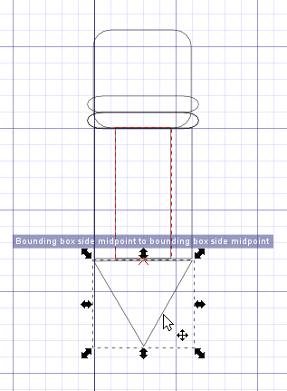
Moving the triangle.
Now you’ll create the second triangle for the pencil’s lead
tip.
With the triangle still selected (select it if it isn’t),
left-click on the edge and, with the left mouse button still pressed, tap the
spacebar once and then drag the copy of the triangle off to the left or right
for resizing.
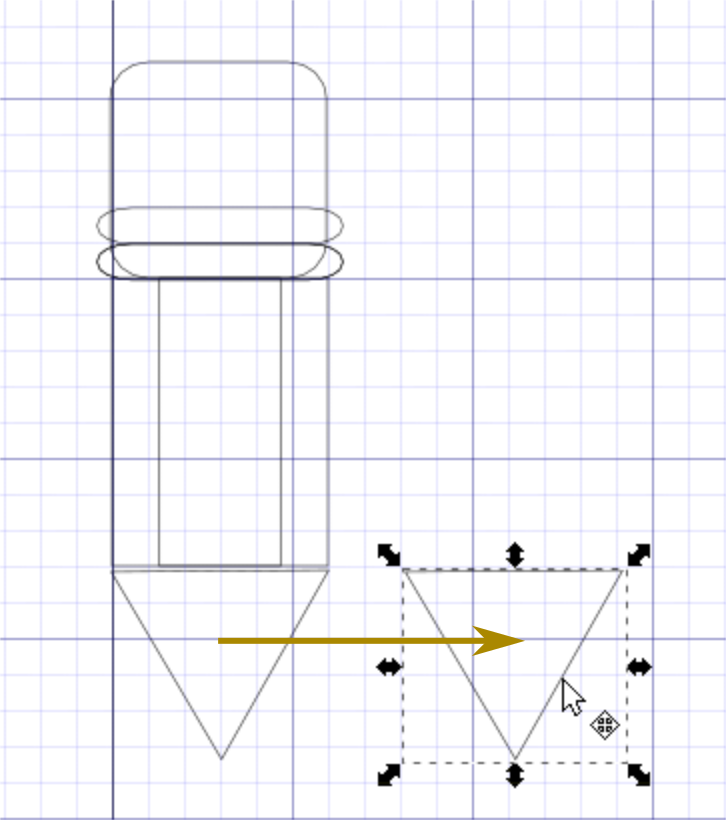
Moving the triangle.
<Ctrl>-click on the triangle and shrink it down so that its edges
are about one square edge in length.
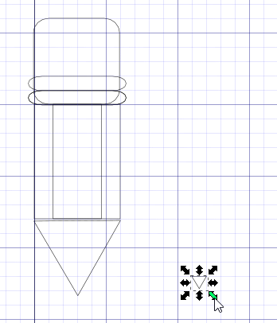
Reducing the size of the second triangle.
The pencil lead tip looks a little too small. We’ll make it a
little larger. If the pencil lead triangle isn't selected, then select it so we
can edit its size.
Now click on the open lock icon in the Tool Controls bar
(),
located between the width (W) bar and height (H) bar, to toggle it
closed (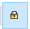). When the lock is closed, you can change the size of a selected
object without changing one or another dimension individually (in other words,
you maintain the aspect ratio).
With the small triangle still selected, change the height (H) to
0.2 in the the Height box and press <Enter>.

{kind=link}

 )
in the toolbox, and click in the middle of the window once or twice until you
are zoomed in to about 150%. (Notice that 150%, more or less, is displayed
in the bottom left corner of the window.)
)
in the toolbox, and click in the middle of the window once or twice until you
are zoomed in to about 150%. (Notice that 150%, more or less, is displayed
in the bottom left corner of the window.) )
to select it. Drag the inner rectangle until you see the tool tip indicating
that the rectangle will now snap into place.
)
to select it. Drag the inner rectangle until you see the tool tip indicating
that the rectangle will now snap into place. ).
).